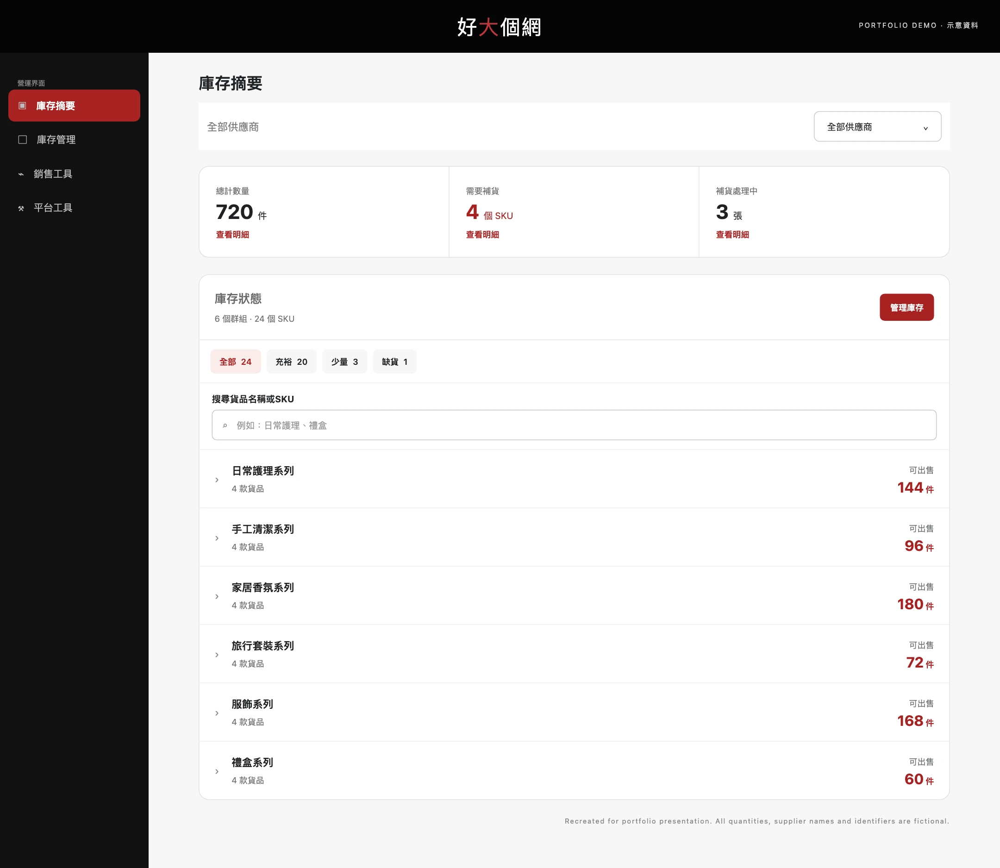
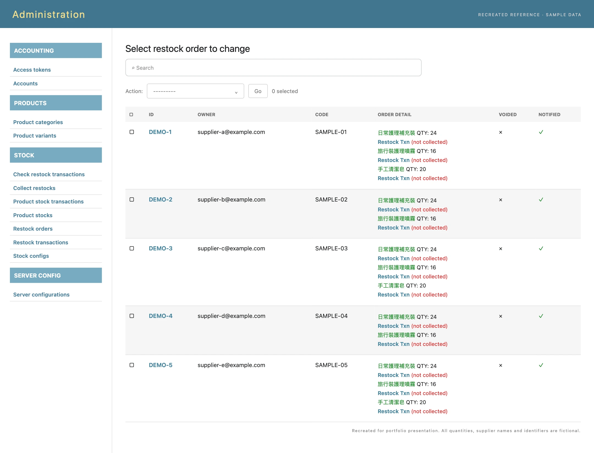
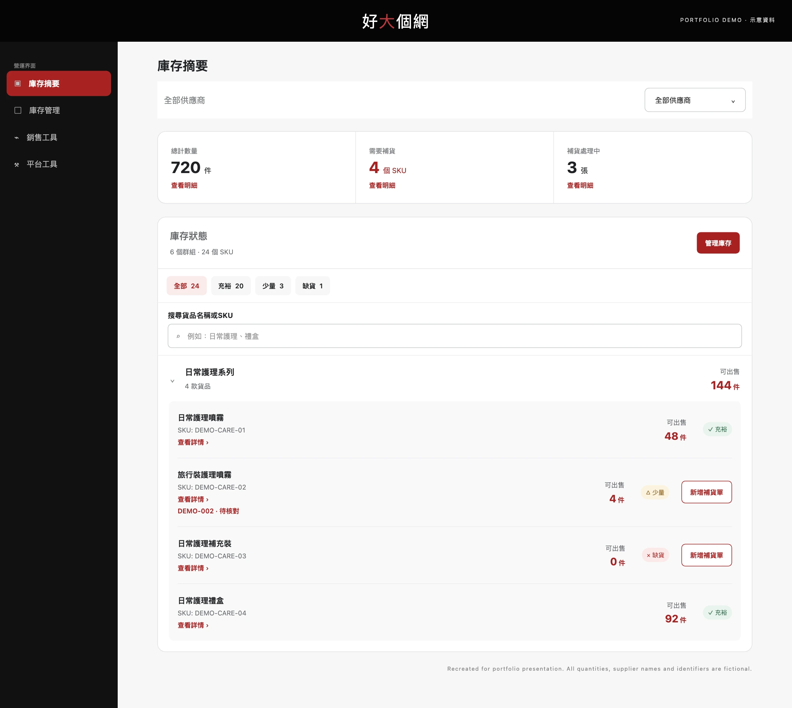
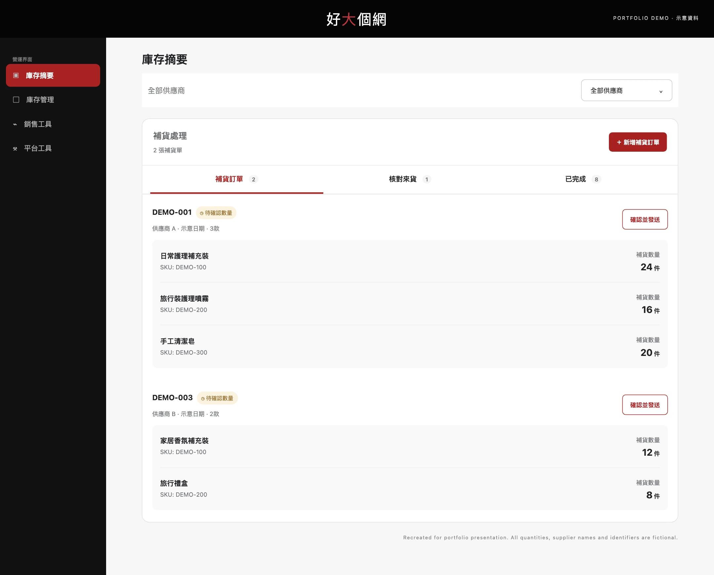

From stock records
to daily operations.
I turned a record-heavy administration interface into an operator-facing GUI for inventory and replenishment. My work covered requirements definition, workflow design, interface design and front-end development.
Inspect the interface viewsAll interface visuals on this page are recreated for this portfolio using fictional quantities, product names, suppliers and identifiers. No live operational records are shown.

The starting point
The reference backend exposed the underlying records directly: stock tables, restock orders, individual transactions and separate notification flags. Long product lists, internal identifiers and technical navigation competed for attention.
Those records contained the information needed to operate the business. The design task was to organise it around everyday questions: what is available, what needs replenishing, and what is waiting for the next step?
Make the next operational task visible without making the operator interpret the database.
Same operation.
A clearer working view.

Define the work before the screen
I organised the requirements into three connected jobs. This gave the interface a practical structure and kept the GUI decisions tied to the work behind them.
- 01 / AssessRead stock health
See overall availability, shortages and replenishment in progress.
- 02 / InspectFind the right SKU
Narrow by supplier, stock status or search, then open a product group.
- 03 / ProgressFollow replenishment
Keep order preparation, incoming checks and completed work distinct.
The navigation uses operational language: 庫存摘要, 庫存管理, 銷售工具 and 平台工具. The stock overview gives the operator a starting point before exposing individual records.
Overview first.
Detail when needed.
Product groups keep the initial list manageable. Opening a group reveals SKU identifiers, available quantities and stock states in context.
Text labels distinguish 充裕, 少量 and 缺貨 alongside colour. A low-stock item can show both the replenishment action and an existing order reference.

Give each handoff
a visible state.
The replenishment area separates 補貨訂單, 核對來貨 and 已完成. Orders remain grouped with their supplier, item list, quantities and current status.
The confirmation action sits with the order it belongs to. Operators can inspect its contents before moving it forward.

Carry the design into the GUI
I also developed the front end, carrying the information hierarchy and workflow into the completed interface. The scope included the summary layout, supplier selector, status filters, searchable product groups and replenishment views.
A consistent visual language connects these areas: red marks primary actions and key quantities, neutral surfaces separate sections, and labelled stock states make exceptions recognisable.
Keeping the product model and interface implementation together helped preserve the relationship between what a record means and what the operator can do next.
The delivered result
The completed internal interface brings inventory assessment, SKU inspection and replenishment tracking into one working environment.
A technical backend translated into a GUI built around daily operational work.
This case demonstrates requirements definition, workflow modelling, interface design and front-end delivery. The result presented here is the completed product; operational time savings and business impact have not been quantified for this portfolio.
Visuals are portfolio recreations of the reference and finished interface. Product data, supplier identities, contact details, order references and quantities have been replaced with fictional examples.